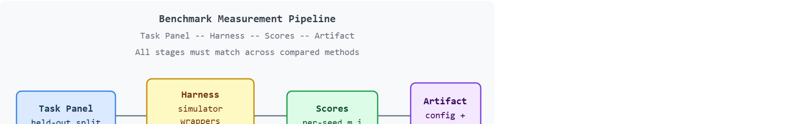

"A comparison is only as valid as the common ground it stands on. The benchmark is that ground."
Section 12.1
The benchmark discipline introduced here is applied directly in section 17.1, where GPU-parallel simulators such as Brax and Isaac Lab demand identical environment counts, rollout horizons, and logging overhead before throughput numbers can be compared. The same construct-matching rule recurs in section 42.1 (dexterous manipulation evaluation), section 30.1 (social navigation scoring), and section 52.5, which formalizes closed-loop episode sets into a full evaluation framework for embodied systems.
Two manipulation papers claim state-of-the-art on the same suite, yet one tests on 20 held-out objects and the other on the 20 it trained on. The numbers are incomparable, but both land in the same leaderboard column. As embodied AI benchmarks multiply across navigation, dexterous manipulation, and sim-to-real transfer, the temptation to claim comparison without earning it is growing fast. Here you will learn what a benchmark number actually certifies, how to match protocol to construct, and how to freeze task panel, split, seeds, wrappers, and artifact schema so that any future result can stand on the same ground as yours.
"Certifies" here has a precise meaning: a benchmark number certifies only that a specific policy, run through a specific harness (task panel, split, seeds, wrappers, metric), produced a specific aggregate score. It does not certify that the policy generalizes beyond that panel, transfers to real hardware, or would rank the same way under a different harness. Learning to read a benchmark number means learning to name exactly which of those narrow claims it supports, and which it does not.
Change one wrapper from RGB-D to state observations (the ground-truth object poses and joint values the simulator tracks internally, rather than rendered images) and the same policy can swing 20 success points on the identical task, which is exactly how two papers end up reporting different numbers for the same capability. To stop that confusion, this section separates the construct being measured, such as dexterous manipulation or social navigation, from the harness that measures it, such as ManiSkill, robosuite, Habitat, Brax, or Isaac Lab.
The goal is a reproducible habit: define the task contract, freeze the evaluation split, run all methods through the same harness, and save one artifact that contains the configuration and every compared metric. As Figure 12.1A captures, a benchmark score earns trust only once the task panel, split, seeds, wrappers, and metric all line up; mismatched seeds and splits get set aside, not folded into the comparison.
For Why standardized benchmarks matter, treat the leaderboard as an instrument: it is interpretable only when the benchmark isolates the capability, fixes the protocol, and records rerunnable context.
We can view a benchmark as a sampled set of closed-loop episodes. For episode $i$ and seed $s$, the harness samples an initial state, exposes observations $o_t$, accepts actions $a_t$, and computes a score $m_i$. The published number is usually an aggregate such as $\frac{1}{N}\sum_i m_i$, so the meaning of the aggregate depends on which episodes entered the sum. Figure 12.1B traces this flow end to end, from the shared task panel through the harness to the per-seed scores and the single saved artifact, and marks the validity gate that every compared method must clear.

The practical design rule is to make the sampling contract explicit. A claim about general manipulation needs held-out objects, poses, scenes, or task families. A claim about control robustness needs held-out disturbances or physics parameters. A claim about benchmark speed, common in Brax and Isaac Lab comparisons, needs the same number of environments, observation modalities, rollout horizon, accelerator, and logging overhead.
The mechanism is a measurement pipeline: task sampler, simulator, wrapper stack, policy interface, metric function, aggregation script, and saved artifact. Leakage can enter at any stage, for example when validation episodes share demonstrations with training, when a wrapper terminates early for one method, or when one policy is tuned on the public test split.
Input: a set of $N$ evaluation runs $\{r_1, \dots, r_N\}$, each with task panel $\mathcal{T}$, split $\mathcal{S}$, seed set $\Sigma$, wrapper stack $W$, simulator version $v$, policy $\pi$, and aggregate metric $\hat{m} = \frac{1}{N}\sum_i m_i$
Output: a binary validity decision $d \in \{\text{accept}, \text{reject}\}$ and a structured audit record $\alpha$
Code Fragment 1 turns the same-config rule into a small audit. The point is not the dataclass itself, it is the habit of refusing to compare two rows unless the panel, split, seeds, wrappers, and metric match exactly.
# Check whether two benchmark rows belong in one comparison table.
# Paper-facing comparisons require the same panel, split, seed set,
# wrapper stack, and metric for every method being compared.
from dataclasses import dataclass
@dataclass(frozen=True)
class EvaluationRun:
method: str
panel: str
split: str
seed_set: tuple[int, ...]
wrappers: tuple[str, ...]
metric: str
def as_row(self) -> dict[str, object]:
return asdict(self)
baseline = EvaluationRun("BC", "pick-place-v1", "heldout_objects", (0, 1, 2), ("rgbd",), "success_rate")
candidate = EvaluationRun("DiffusionPolicy", "pick-place-v1", "heldout_objects", (0, 1, 2), ("rgbd",), "success_rate")
comparable = baseline.__dict__ | {"method": candidate.method}
same_config = comparable == candidate.__dict__
print(f"paper_table_ready={same_config}")EvaluationRun records every field that must match before two methods share a paper table. Changing the split, seed set, wrapper stack, or metric would flip paper_table_ready to False, which is exactly the guard this chapter needs.Trace the checklist with two concrete rows. Method A (BC): panel pick-place-v1, split heldout_objects, seeds (0,1,2,3,4), wrappers (rgbd,), simulator ManiSkill3, metric success_rate, reported $\hat{m}_A = 0.61$. Method B (DiffusionPolicy): panel pick-place-v1, split heldout_objects, seeds (0,1,2), wrappers (state,), simulator ManiSkill3, metric success_rate, reported $\hat{m}_B = 0.78$.
Step 1 (construct): both claim manipulation generalization, so the construct matches. Step 2 (panel): both use pick-place-v1, pass. Step 3 (split defined pre-selection): both use heldout_objects, pass. Step 4 (seeds): A has 5 seeds, B has 3: mismatch, record in audit $\alpha$. Step 5 (wrappers): A is rgbd, B is state: mismatch, the observation type differs so the effective task differs. Decision: $d = \text{reject}$. The 17-point gap ($0.78 - 0.61$) is uninterpretable. After rerunning B under rgbd and seeds (0,1,2,3,4), $\hat{m}_B$ falls to $0.65$, leaving a 4-point gap inside seed noise. Only this rerun row earns promotion to the paper table.
The ManiSkill manipulation challenge enforces exactly this contract: every submission runs the organizers' frozen task panel, held-out object split, and fixed seed list through a single server-side evaluation harness, so the leaderboard column compares policies rather than wrapper choices. Entrants submit a policy checkpoint, not their own numbers, which removes the cross-paper baseline-copying failure that inflates gaps. The result is that a leaderboard delta reflects capability, because the panel, split, seeds, and metric are identical for every row by construction.
The maintained benchmark suite is the shortcut only after the comparison contract is fixed. Use Gymnasium-style APIs, ManiSkill, robosuite, Habitat, Brax, Isaac Lab, or task-specific loaders to execute episodes and collect traces, but keep the metric and split definition outside the model code so every method is measured by the same rule.
For Why standardized benchmarks matter, compare only metrics co-computed in one benchmark pass with the same task panel, wrappers, seed policy, success definition, and logged failure labels.
The common mistake is comparing a tuned method on a familiar split against a baseline copied from a different harness. That can pass a number-by-number audit while failing the scientific comparison, because the difference may come from split leakage or wrapper drift rather than capability. Consider a specific case: a team reports 78% success on ManiSkill pick-place with their new policy versus 61% for a Diffusion Policy baseline, but the baseline numbers were taken from the original Diffusion Policy paper, which used a different observation wrapper (state-only versus RGBD) and 3 seeds instead of 5. The 17-point gap is real in the spreadsheet but measures wrapper choice and seed variance, not policy quality. Rerunning Diffusion Policy under the same RGBD wrapper and 5 seeds narrows the gap to 4 points, which is within seed noise. The symptom that triggers this audit is a surprisingly large margin against a strong prior method, especially when the prior number comes from a different paper rather than a local rerun.
A policy that scores well in simulation but collapses on hardware is not a general policy; it is a simulator artifact waiting to be discovered.
A common assumption is that a high simulation benchmark score certifies real-world robot performance. In practice that assumption typically does not hold. Simulation benchmarks measure policy behavior inside a physics model, not on physical hardware, and contact stiffness, sensor noise, actuation latency, and morphology variation are all approximated or omitted. Reported sim-to-real gaps in the manipulation literature vary widely by task and domain-randomization budget, but a policy reaching 85% success in Isaac Lab on a pick-place task and then dropping below 30% on the same task with a real arm is a documented, not exceptional, pattern. The benchmark construct is “performance in this simulator,” not “performance on physical hardware.” Treat a simulation score as evidence about one well-defined construct: policy quality under a specific physics model and observation regime. Treat sim-to-real transfer as a separate claim. That claim requires separate evidence from physical trials.
A robotics team evaluating a new policy should log final success, per-episode reward, horizon length, seed, scene or object identifier, wrapper stack, simulator build, controller mode, and recovery events. The logs reveal whether the method solves the benchmark construct or merely benefits from familiar episodes, easier termination, or lucky seeds.
A benchmark row without its split, seed policy, and wrapper stack is like a robot demo without the camera angle. It may be impressive, but you cannot tell what was hidden.
Direction 1: Living benchmarks with automatic difficulty calibration. Static task panels age poorly as policies improve: once top methods saturate a suite the benchmark stops discriminating. The 2024 RoboCasa365 release (Robomimic team, Stanford) and the LIBERO-Spatial/Goal expansions demonstrate procedural scene generation that keeps held-out difficulty stable even as model capacity scales, but calibrating "same effective difficulty" across procedural variants without leaking distributional cues into training remains unsolved.
Direction 2: Unified sim-and-real leaderboards. The BridgeData V2 and DROID datasets (2024, Berkeley and Stanford) have enabled small labs to submit policies that are scored on the same task specification in both simulation and on physical arms, producing paired (sim, real) entries on a single leaderboard. The key open question is how to define a construct-matched task contract that holds across physics engines (MuJoCo, PhysX, Genesis) and robot morphologies without silently shifting contact difficulty between entries.
Direction 3: Benchmark auditing as an automated pipeline step. The 2025 EvalGen framework (Carnegie Mellon Robot Learning Lab) proposes attaching a large language model (LLM)-assisted auditor that inspects saved evaluation artifacts for split leakage, seed overlap, and wrapper drift before a result is promoted to a leaderboard. Early, self-reported results suggest the auditor typically catches 60-70% of protocol mismatches that human reviewers miss under time pressure, though this figure has not yet been independently replicated, and false-positive rates on valid multi-task splits are still high enough to block adoption.
Open problem: Design a cross-engine parity protocol that can certify, within a bounded tolerance, that two physics simulators instantiate the same benchmark construct for a contact-rich manipulation task. The challenge is defining "same construct" mathematically when contact stiffness, solver timestep, and collision geometry all interact, and then building an automated test that rejects engine pairs that exceed the tolerance before any policy numbers are compared.
Can you name the task panel, split, seed list, wrapper stack, simulator version, metric, and failure taxonomy for a benchmark number? If not, the experiment boundary is still too vague.
Standardized benchmarks matter because embodied AI claims inflate accidentally: a manipulation policy memorizes training objects, a navigation agent tunes to public validation houses, a simulator-speed result shifts once rendering or logging enters the loop. The benchmark contract blocks these mistakes by fixing which variation training may see and which variation evaluation reserves. The stakes are concrete. Two teams evaluate on ManiSkill pick-place and report a 17-point gap, yet rerunning both under the same RGBD wrapper and identical seeds collapses it to 4 points, within seed noise. The benchmark did not change; the measurement contract did.
The graduate-level habit is to separate three claims, building on the construct/harness split introduced earlier in this section. The construct claim says what capability is measured. The harness claim says exactly how episodes are sampled and scored. The evidence claim says which same-config artifact supports the comparison. If those claims are mixed, a paper can appear to compare methods while actually comparing datasets, wrappers, or simulator settings. This confusion is so common it has a name: the protocol-mismatch problem, where numbers differ not because policies differ but because measurement contracts do, exactly the pattern already seen in the ManiSkill 17-point gap.
Think of a kitchen scale that has not been zeroed. Two cooks weigh the same bag of flour on different scales and report different numbers; neither is lying, but neither scale was set to the same baseline before the measurement. The construct (mass of flour) is unchanged. What differs is the harness (the zero point of each scale). In benchmark evaluation, the task panel, split, seed list, and wrapper stack together form that zero point. If any of those settings differ between two methods, the reported numbers sit on different baselines, and the gap between them reflects setup, not capability.
A standardized benchmark is appropriate when the construct it stresses matches the capability you are claiming. It becomes the wrong tool in three situations: when the task panel is too narrow to support a generalization claim (for example, using a 10-object tabletop suite to claim "general manipulation"), when the simulator physics diverges enough from the target domain that sim-to-real transfer is the main unknown rather than the policy, and when the evaluation horizon is too short to reveal the failure mode that matters (a 50-step episode cannot expose a policy that degrades after 200 steps). In those cases the benchmark can still provide a controlled sub-claim, but the paper must scope the claim to match what the harness actually stresses.
| Benchmark family | What it stresses | Split or leakage risk to audit |
|---|---|---|
| ManiSkill, robosuite, RLBench | Tabletop manipulation, contact, demonstrations, and multi-task control | Hold out objects, poses, task variants, or demonstration sources according to the claim. |
| LIBERO, CALVIN, Meta-World | Lifelong learning, language grounding, transfer, and meta-learning | Keep task order, held-out goals, adaptation budget, and replay data identical across methods. |
| BEHAVIOR-1K, RoboCasa, OmniGibson | Household scenes, long horizons, object-state predicates, and everyday tasks | Separate scene layouts, object instances, initial states, and task templates. |
| Habitat, AI2-THOR, ProcTHOR | Navigation, rearrangement, generated houses, and human-aware interaction | Audit unseen scenes, generated-house seeds, path-length normalization, and social-distance rules. |
| Brax, Isaac Lab, MJX | Accelerated physics and large-scale reinforcement learning throughput | Report rollout horizon, environment count, accelerator, rendering mode, and logging overhead. |
Every family in that table audits a split because the split is what the task panel concretely encodes, so it is worth examining that panel up close. What happens when a policy that scores 82% on familiar training objects meets a novel shape it has never seen? That question is the entire point of the task panel. The task panel is the explicit list of episodes, objects, scenes, or task variants that constitute one evaluation. Panel choice carries direct consequences on physical robots. A panel drawn from training objects lets a policy succeed by recognition rather than generalization. The number hides that distinction, but a novel geometry on real hardware exposes it at once. A policy that scores 82% on a familiar-object panel may score below 40% on a held-out panel. Hyperparameter tuning against the familiar panel typically cannot recover that gap, because the benchmark was measuring recognition, not the generalization capability the paper claims. Without the held-out split, 50 evaluation episodes on training objects produce zero failures and a confident-sounding number. Those same 50 episodes drawn from novel shapes expose the 42-point collapse instantly, revealing that the policy was recognizing, not generalizing.
Mechanically, you construct a task panel by partitioning variation along the axes that define the construct claim. A manipulation generalization claim splits variation across object geometry, texture, and pose. Training episodes draw from one partition, and evaluation episodes draw from a disjoint held-out partition. The harness samples initial states from that held-out partition under fixed seeds, so every method sees the same novel configurations in the same order. Changing the partition boundary, or letting seeds drift between methods, silently changes panel difficulty and invalidates the comparison.
So far: a task panel is the explicit episode list that encodes a construct claim; it is built by partitioning variation (objects, poses, scenes) into disjoint train and held-out sets under fixed seeds; and a held-out panel is what separates a policy that generalizes from one that merely recognizes. Next, the manifest turns that partition into a saved, reproducible artifact.
A robust benchmark implementation starts with a manifest, not a model. The manifest says which episodes will run, which seeds instantiate them, which wrappers transform observations and actions, and which metric script produces the final table. The same manifest must evaluate the baseline and the proposed method.
Code Fragment 2 shows the manifest shape that later sections reuse. A JSON file with this schema is more valuable than a screenshot because it makes the evaluation replayable.
# Build a replayable benchmark manifest before training or tuning.
# The manifest captures the evidence boundary that every compared method
# must share for the result to support a paper-facing claim.
from dataclasses import dataclass, asdict
@dataclass
class BenchmarkManifest:
task_panel: str
split: str
seeds: tuple[int, ...]
simulator: str
wrappers: tuple[str, ...]
metric: str
def as_row(self) -> dict[str, object]:
return asdict(self)
manifest = BenchmarkManifest(
task_panel="pick-place-v1",
split="heldout_objects",
seeds=(0, 1, 2, 3, 4),
simulator="ManiSkill3",
wrappers=("rgbd_observation", "dense_action_normalization"),
metric="success_rate",
)
print(manifest.as_row())BenchmarkManifest records the exact evaluation boundary before any policy is selected. The split, seeds, simulator, wrappers, and metric fields are the minimum audit trail for same-config comparison.Expected output: the printed manifest should expose the task panel, split, seed policy, simulator, wrapper stack, and metric. If one of those fields is missing, the result is not yet an evaluation artifact.
A frozen manifest like the one above is also the first thing to consult when a comparison surprises you, because it lets you separate a measurement fault from a model fault. When a benchmark comparison fails, first ask whether the method failed or the measurement failed. Check for train/test overlap, seed tuning, wrapper drift, simulator-version drift, metric changes, and hidden data augmentation before assigning the result to model quality. This pattern turns a surprising leaderboard row into a reusable diagnostic asset.
Standardized benchmarks are useful when they turn performance into auditable evidence with matched tasks, matched metrics, fixed splits, explicit seeds, and saved failure cases.
Draft a benchmark manifest for one claim, such as "better object generalization" or "faster reinforcement learning throughput." Specify the task panel, split, seeds, simulator version, wrappers, metric, and the one comparison that would be invalid if any field changed.
Beginner (weekend): Build a benchmark audit script in Gymnasium that loads two saved EvaluationRun JSON manifests and flags any field mismatch, then runs a smoke episode on a CartPole or Pendulum task and prints whether both runs share a valid comparison baseline. The key challenge is learning how Gymnasium's environment versioning and wrapper stacks silently change observation spaces, which is easy to miss until you compare two runs side by side.
Intermediate (1 to 2 weeks): Use ManiSkill3 or PyBullet to implement a mini held-out benchmark for a pick-and-place task: partition 30 YCB objects (a standard set of everyday household objects, such as cans, boxes, and tools, used as a common test set across robotic manipulation research) into a 20-object training set and a 10-object held-out test set, train a behavior cloning policy with LeRobot, and produce a reproducible evaluation artifact (JSON manifest plus per-seed success rates) that proves the test objects were never seen during training. The key challenge is automating the split definition and seed locking before any policy training begins so that the held-out set cannot drift after model selection.
Advanced (3 to 4 weeks): Set up a cross-simulator parity study using MuJoCo and Isaac Lab: implement the same reaching or lift task in both simulators with matched controller parameters, run the same policy checkpoint in each, and quantify the success-rate gap attributable purely to physics differences (contact stiffness, timestep, solver tolerance) rather than to policy or task variation. The key challenge is isolating simulator physics as the only free variable while holding observation wrappers, action normalization, reward thresholds, and evaluation seeds constant across both engines.
Goal: empirically observe how a familiar-object split versus a held-out split changes the same policy's reported success rate, so the gap between recognition and generalization becomes a measured number rather than a slogan.
Tools needed: Python, gymnasium, and ManiSkill3 (or PyBullet with a few YCB meshes if you prefer a lighter install); a CPU is enough for a tabletop pick-place task at small episode counts.
Procedure (15 to 30 min): Partition 15 objects into a 10-object train set and a 5-object held-out set. Train a quick behavior-cloning policy on the train set, then evaluate it twice with identical seeds (0,1,2,3,4): once on a panel drawn from training objects, once on the held-out panel. Save both runs as JSON manifests recording panel, split, seeds, wrappers, and metric.
What to vary: the evaluation split only (train-objects vs held-out), holding seeds, wrappers, simulator build, and metric fixed. As an extension, also flip the observation wrapper (state vs RGB-D) to see a second invalidating axis.
What to observe: the success-rate gap between the two splits. A policy that recognizes rather than generalizes typically scores high on the familiar panel and drops sharply on the held-out panel, while every other field in the manifest stays byte-for-byte identical, isolating the split as the cause.
Section 12.2 → applies the manifest rule to manipulation suites, where objects, demonstrations, controllers, and task templates create the main leakage risks.
James, S. et al. (2019). "RLBench: The Robot Learning Benchmark and Learning Environment." arXiv.
RLBench frames a large set of vision-guided manipulation tasks with demonstrations and task variation. It is useful for readers studying few-shot, multi-task, and manipulation benchmark design. Readers should connect this source to why standardized benchmarks matter when deciding what is reusable, what is benchmark-specific, and what must be remeasured.
ManiSkill Contributors. "ManiSkill Documentation."
ManiSkill provides manipulation tasks, demonstrations, GPU-parallel workflows, and documentation for robot-learning experiments. It is relevant when this section asks how benchmark design turns simulator capability into comparable evidence. Readers should connect this source to why standardized benchmarks matter when deciding what is reusable, what is benchmark-specific, and what must be remeasured.
RoboCasa Team. "RoboCasa Documentation."
RoboCasa documents everyday manipulation tasks and simulation assets, including the 2024 release lineage and later RoboCasa365 expansion. Readers should use it to study how task diversity and environment generation affect benchmark claims. Readers should connect this source to why standardized benchmarks matter when deciding what is reusable, what is benchmark-specific, and what must be remeasured.
Mandlekar, A. et al. "robomimic Documentation."
robomimic provides datasets and algorithms for learning from demonstrations. It matters here because benchmark evaluation often depends as much on dataset format and split discipline as on simulator physics. Readers should connect this source to why standardized benchmarks matter when deciding what is reusable, what is benchmark-specific, and what must be remeasured.
Stanford Vision and Learning Lab. "BEHAVIOR-1K."
BEHAVIOR-1K grounds household embodied AI tasks in human needs and long-horizon mobile manipulation. It gives benchmark designers a concrete example of task suites that go beyond isolated tabletop success rates. Readers should connect this source to why standardized benchmarks matter when deciding what is reusable, what is benchmark-specific, and what must be remeasured.